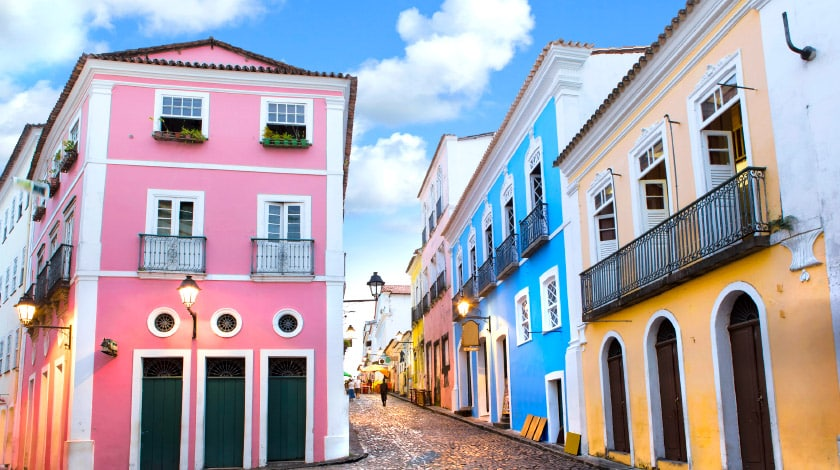
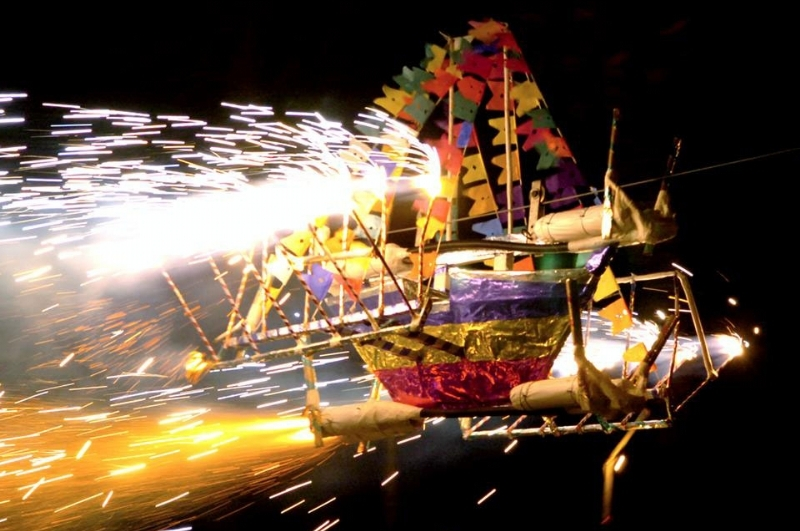
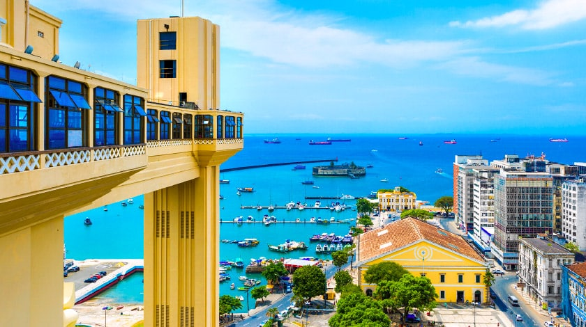
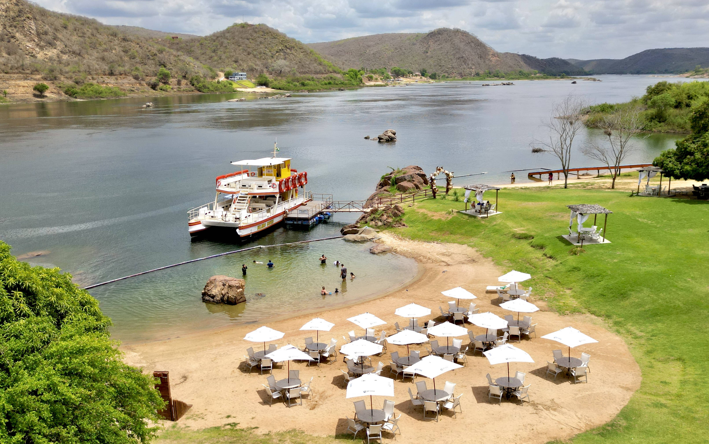
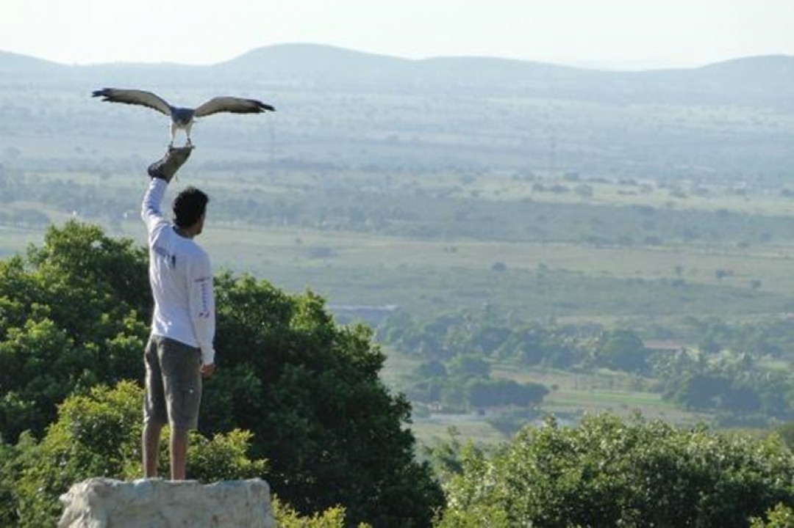

Lugares legais em Aju
Pelourinho

Carinhosamente apelidado de “Pelô”, o Pelourinho é um bairro histórico de Salvador que abriga a área do Largo Terreiro de Jesus até o Largo do Pelourinho. Cercado de construções do século XVII e XVIII e ladeiras de paralelepípedo, o local é um ícone do Centro Histórico de Salvador, tombado pelo IPHAN e declarado Patrimônio da Humanidade pela UNESCO. Lá é possível apreciar casarões coloniais coloridos, por exemplo, que abrigam ateliês, lojas, museus, bares, restaurantes e até hospedagens. A sede do Olodum e o Museu do Jorge Amado também marcam a cena cultural de lá. Além disso, a Catedral Basílica de Salvador e a Igreja de Nossa Senhora do Rosário dos Pretos não podem faltar no roteiro.
Para se divertir na época mais animada do ano

Localizada a 70km da capital, Estância resguarda a maior expressão cultural do município e Patrimônio Imaterial de Sergipe, o Barco de Fogo, alegoria produzida de forma artesanal que se movimenta deslizando sobre cabos de aço de um lado para o outro, a partir da explosão das espadas feitas com pedaços de tabocas, enroladas com cordão de algodão e preenchidas com pólvora. Essa que é a atração mais esperada durante os festejos juninos da cidade, dando um espetáculo de luzes e cores durante a sua exibição.
testeElevador Lacerda

Salvador abriga famosos pontos turísticos da Bahia, entre eles o Elevador Lacerda, por exemplo. Inaugurado em 1873, o elevador mede 72 metros de altura e tem capacidade para mais de 100 pessoas. Sendo o foi o primeiro do mundo a servir de transporte público, ele liga a Praça Tomé de Sousa, na Cidade Alta, à Praça Cayru, no bairro do Comércio, a Cidade Baixa. A viagem dura 30 segundos e custa R$ 0,25 por viagem (sujeito à alteração). O elevador transporta em média 28 mil pessoas por dia, com funcionamento das 7h às 22h. É impossível passar pela cidade e não ter essa experiência! Aproveite para apreciar a visão panorâmica do alto da passarela do elevador e tirar cliques instagramáveis.
Rota do cangaço

Em Canindé de São Francisco, a Rota do Cangaço é um roteiro turístico que explora a história e os locais emblemáticos do cangaço, que marcou o sertão nordestino no início do século XX. A principal atração é o passeio pelo Rio São Francisco, que leva os visitantes até a Grota de Angicos, onde Lampião foi morto em 1938. Durante o percurso, uma trilha ecológica, guias locais contam histórias e curiosidades sobre a vida dos cangaceiros e a cultura sertaneja.
Parque dos Falcões

Localizado na cidade de Itabaiana, no interior do estado, a 45 km de Aracaju, é um lugar diferente para quem quer conhecer pontos turísticos de Sergipe. O Parque dos Falcões funciona em um sítio e recebe falcões, gaviões e corujas machucados. É o único centro de criação, multiplicação e preservação de aves de rapina da América do Sul e o único do Brasil autorizado pelo Ibama, além de ser uma referência mundial na reabilitação desses animais. Além de tratamento adequado, é feito um trabalho de reprodução e treinamento para os animais ficarem aptos a realizar shows para os turistas. Muitas aves do Parque dos Falcões já participaram de programas de televisão e filmes. Há aquelas inseridas de volta à natureza. Na visita, é possível ver de perto os animais, assistir às exibições, interagir e saber mais sobre as aves e o trabalho realizado, com auxílio de um guia que acompanha os visitantes e responde às principais dúvidas.
Saiba mais